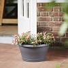

X
CORSICA DOOR STOPPER
 Maceta circular de plástico. Recomendada para exterior gracias a que cuenta con protección ante los rayos ultravioleta y es resistente al hielo. Disponible en diferentes colores.